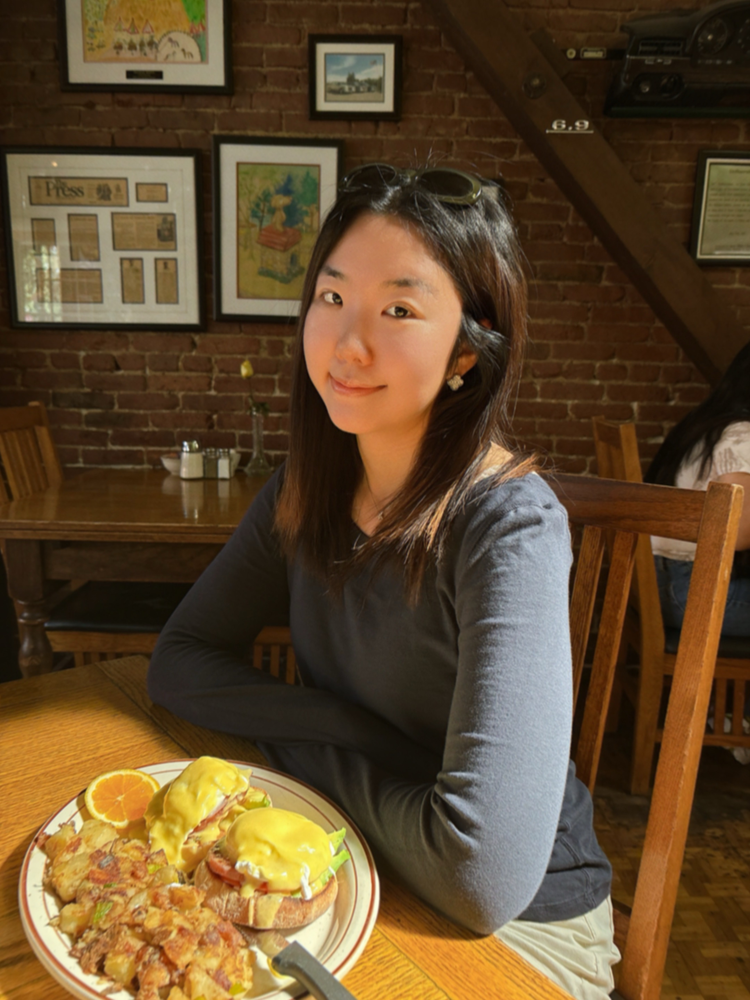

🖤 Hi! I'm Su. Sumin (수민) for those who want my real name.
I work on post-training, evaluation, and model behavior. I'm particularly interested in data attribution, data efficiency, and understanding why models succeed, fail, and generalize.
At Turing, I lead Terminal Bench, working on reward design, synthetic data generation, and feedback signals for post-training. Previously, I pre/post-trained domain-specific language models across enterprise and media applications.
Originally from Korea, with formative years in New York and now based in SF.
U.S. Citizen interested in defense tech 🇺🇸🇰🇷

Research
- SFT-GO: Supervised Fine-Tuning with Group Optimization for Large Language Models. Developed a token importance-aware post-training method for improving training signal utilization in large language models. arXiv, 2025.
- Small Language Models: Architecture, Evolution, and the Future of Artificial Intelligence. Proposed a multi-axis taxonomy for classifying small language models and synthesized emerging approaches to capability-efficiency tradeoffs. Preprint, 2025.
- Harnessing Business and Media Insights with Large Language Models. Pre- and post-trained a domain-specialized LLM for business intelligence and media analysis for Fortune Magazine. arXiv, 2024.
- Model Probing and Capability Attribution. Developed a probing framework for identifying which latent linguistic signals drive model predictions, enabling capability attribution, systematic error analysis, and instance-level failure diagnosis. Report, 2022.
- Behavioral Effects of Model Compression. Investigated how pruning and quantization alter learned representations and downstream model behavior, revealing compression-induced shifts in calibration, prediction dynamics, and output distributions across diverse task settings. Report, 2022.
- Low-Resource Machine Translation. Combined target-side monolingual data augmentation with LangRank-guided transfer language selection, improving BLEU scores by up to 345% over baseline systems for Belarusian-English and Azerbaijani-English translation. Report, 2022.
- Low-Resource Multilingual ASR. Investigated tokenization and self-supervised representation learning for low-resource speech recognition, evaluating HuBERT, wav2vec 2.0, language model integration, and Byte Pair Encoding vocabulary design in African-accented French. Report, 2022.
- Temporal Action Localization. Investigated architectural approaches for long-range temporal reasoning in video understanding, developing extensions to Boundary-Matching Network that improved ActivityNet-1.3 localization performance by 0.9 AUC through temporal feature propagation and global context aggregation. Report, 2021.
Projects
Driver/Restaurant Recommendation System
Developed an Uber-like Java program that matches real-time client requests to available cab drivers and targeted restaurant advertisements based on regression models by processing multiple streams of GPS, Apple Watch user health and biometric data, and Google Map & Yelp business data. Deployed Kafka and Samza on a YARN cluster provisioned on AWS.
Deep Learning Algorithms From Scratch
Implemented forward and backward methods for linear, 1D & 2D conv, RNN, dropout, batch norm, sigmoid, tanh, ReLU, softmax, hidden markov, matrix factorization, logistic regression, SVM, TF-IDF, Decision Tree, and neural network without relying on Pytorch or Scikit-Learn
Twitter Analytics Web Service
Implemented ETL for QR code, Blockchain validation, and User Recommendation services on a Twitter dataset (~1TB) using AWS, Spark, and Kubernetes. Designed and optimized a MySQL DB schema for scale and throughput. Deployed web-servers (Sanic) in Python
Heterogeneous Storage for Social Networking
Configured and deployed heterogeneous SQL and NoSQL databases (MySQL, MongoDB and Neo4j) in Java with a caching mechanism for a Facebook-like social networking web app
..other side quests
an AI-based Codenames game, personalized rental listing search, and a personalized reflection assistant based on Korean traditions. I'll share more when we meet.